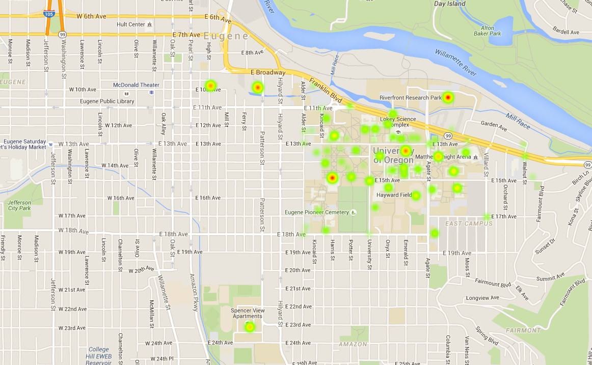
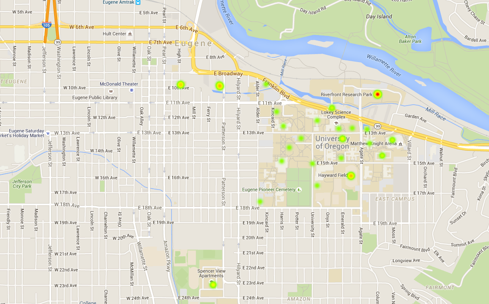 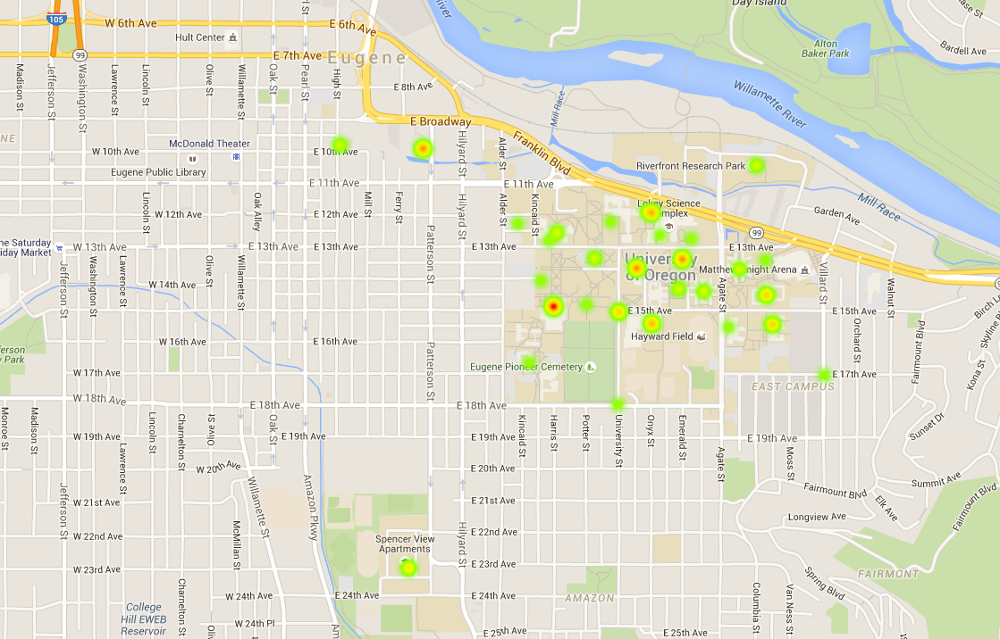 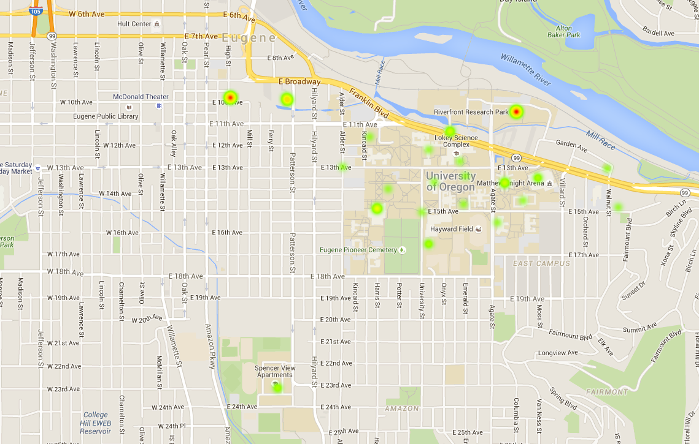 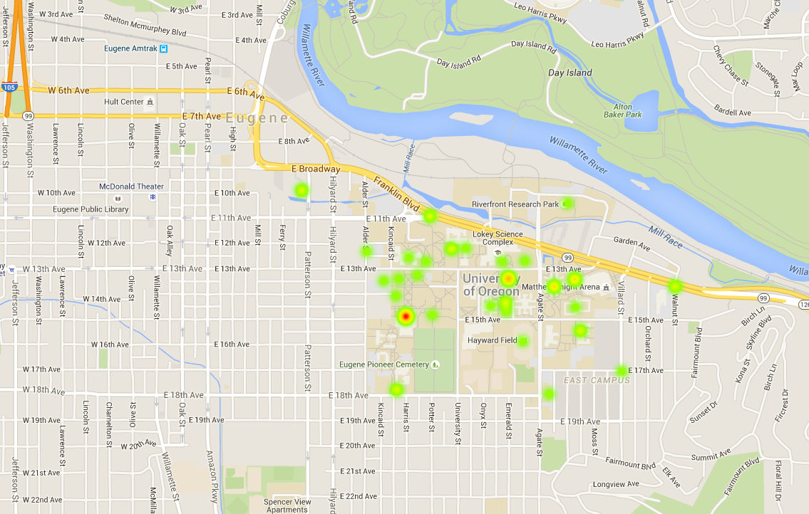 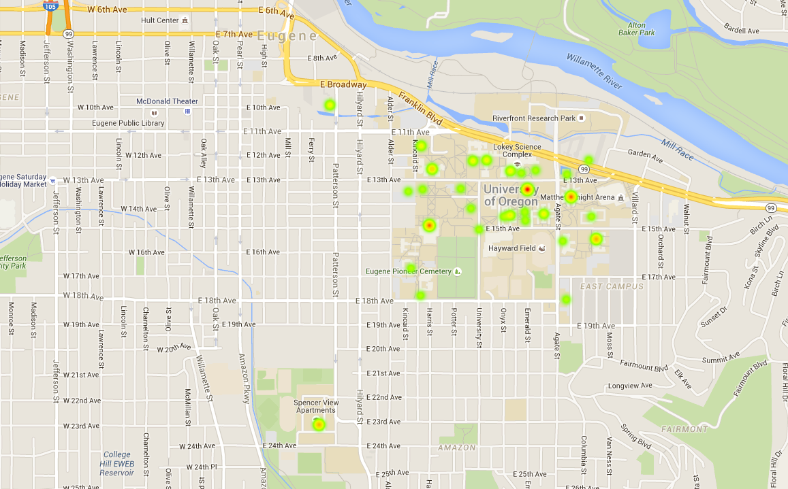
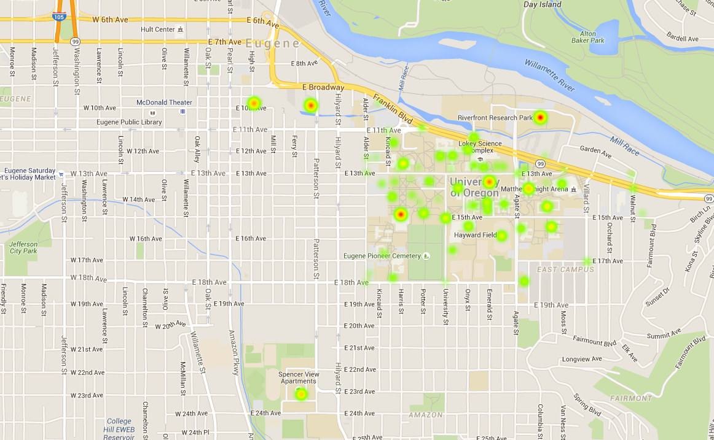
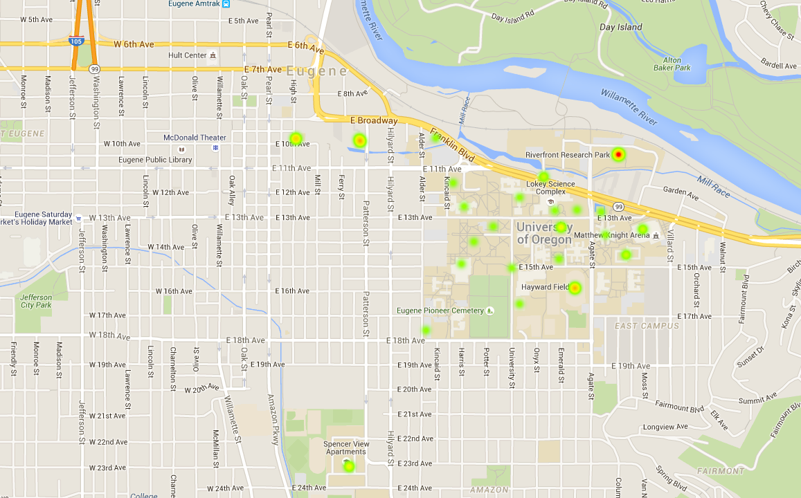 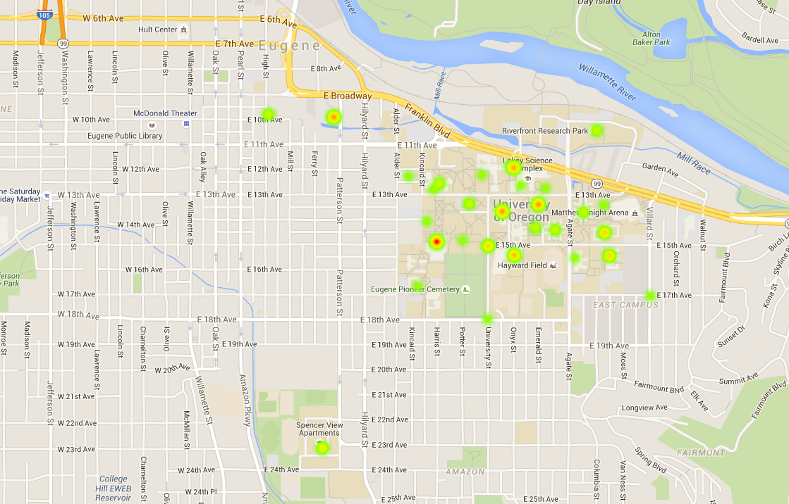 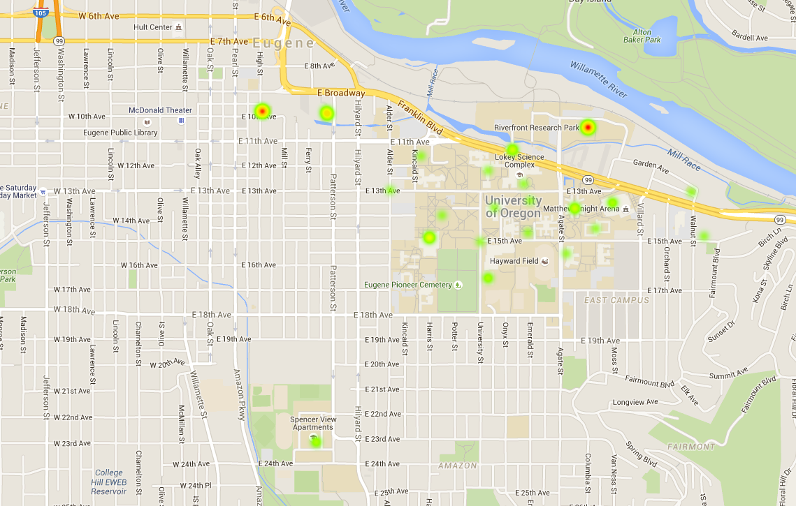 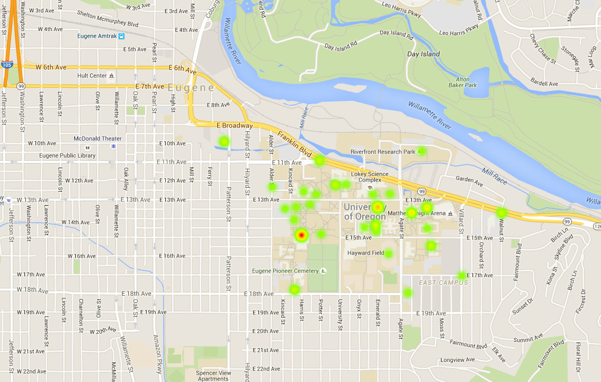 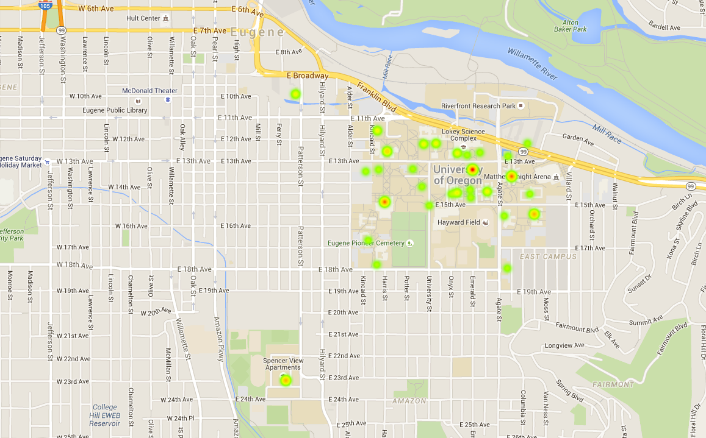
Last week, the University of Oregon Police Department sent out two campus crime alerts: One for aggravated assault, one for armed robbery.
These crime alerts and advisory warnings students receive from the UOPD only show a glimpse of criminal activity on campus each week. The Emerald gathered data on all crimes reported to the UOPD between Nov. 24, 2014 and Nov. 24, 2015: A year at UO in crime.
These numbers refer to crimes committed on UO property and dealt with by the UOPD. For this map, Drug and Liquor Violations were omitted in order to focus the data more toward crimes concerning public safety.
The most common crimes were:
- Theft: 92 incidents were reported in almost every major building or parking lot on campus. This number excludes bike thefts, which are common enough to warrant their own category.
- Warrant arrests: Warrant arrests came in second and tended to congregate in areas slightly off campus, such as the Baker Center Downtown and the Riverfront Research Park.
- Bike thefts: Often considered a rampant problem on campus and in the greater Eugene community, bike theft makes up its own category, with 64 reports.
The areas with the highest crimes are Spencer View Apartments, the Knight Library and the Riverfront: